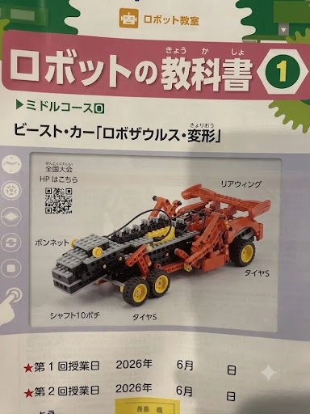

〜 ビースト・カーモードへの変形チャレンジ 〜

作業時間は1日程度、小学4年生が大人の方と一緒に取り組める内容です。
シャフト10ポチにタイヤSを2個差し込み、ブッシュで抜けないように固定します。
どう体の前方（頭に近いビーム付近）に、1で作った前輪ユニットをビームで固定します。
足を動かす「ロッド3アナ」の部分を、手で後ろ側にぐるっと回転させられるように、周りのパーツとの隙間を少し広げます。
余っているプレートやビームを、背中やしっぽの横に付けて「車のボディ」らしく肉付けしてみましょう。自分だけのカッコいいデザインを探してね！
変形の動き（恐竜から車へ）をスムーズに見せる「演技」の練習も、大会などでは大切な工夫になります。カッコよく変形させるポーズを研究しよう！